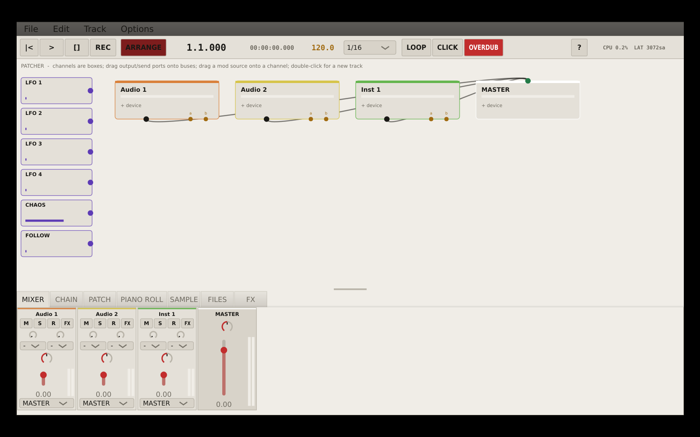
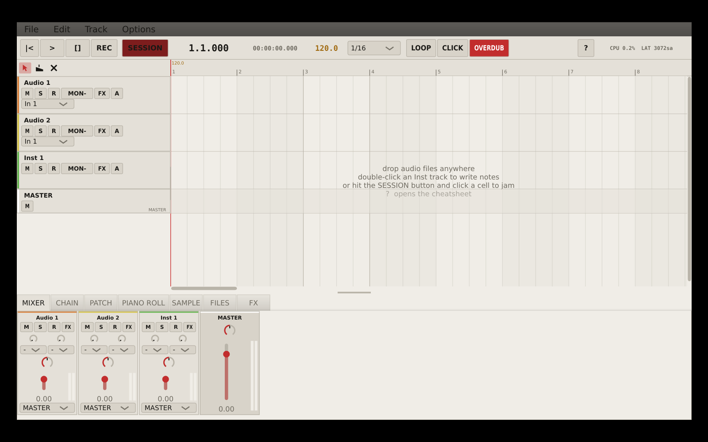
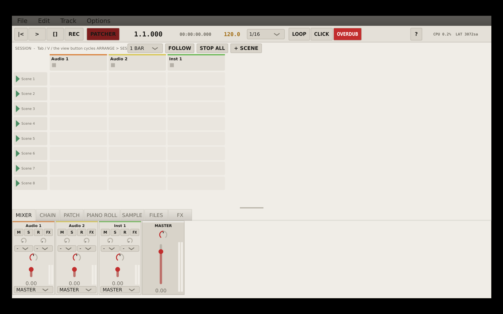

Use backups
This is public so people can try it, not because it is polished. Test with copies of sessions and audio.

Mega-beta / barely tested / work in progress
A very early DAW-shaped workspace for timeline editing, live clip launching and patchable audio experiments.
Current state
This is public so people can try it, not because it is polished. Test with copies of sessions and audio.
An optional experimental effects rack. With modules off, the tests expect it to pass audio through unchanged.
A patcher that can act as an effect or an instrument, with param bridges and OSC in/out.
Build artifacts
These are mega-beta builds: barely tested, changing quickly, and not something to trust with irreplaceable work.
Screenshots


Working surface
Source build
cmake -B build -DCMAKE_BUILD_TYPE=Release
cmake --build build -j$(nproc)
./build/dawglitch_artefacts/Release/HIKIM
./build/ruin_tests_artefacts/Release/ruin_testsThe test suite covers model, clip, instrument, stretch-cache and TEETH/WIRES passthrough behavior. It is still early software.